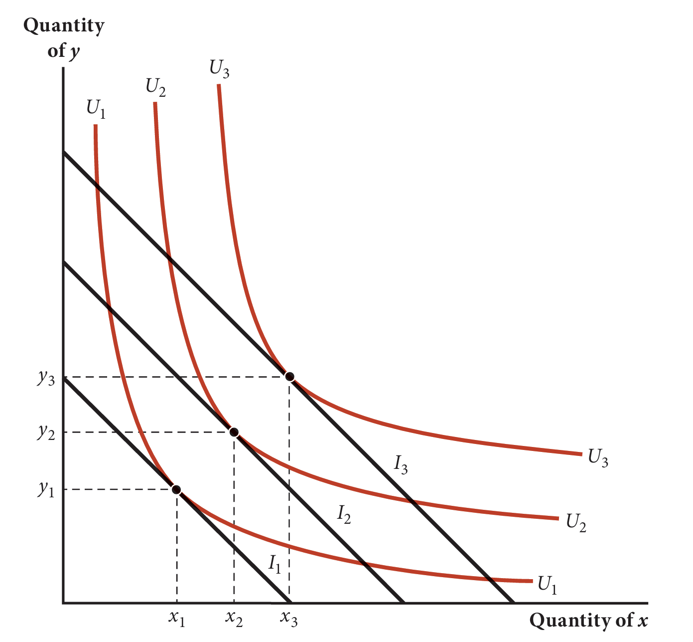
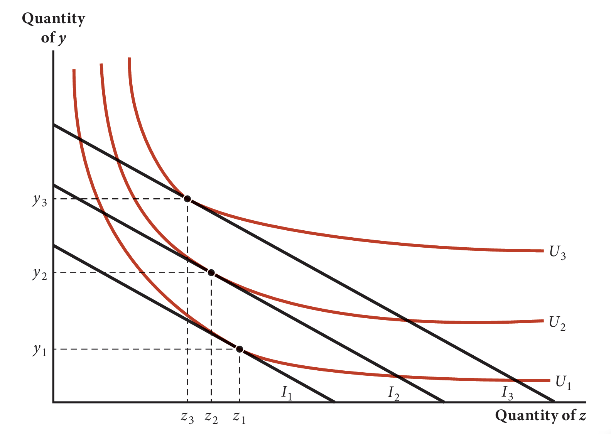
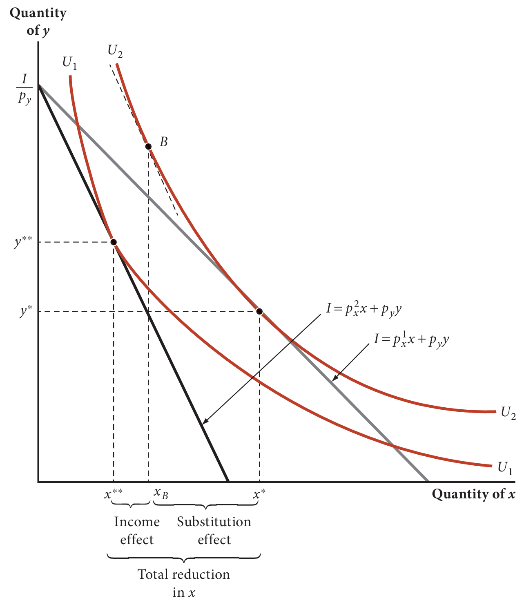
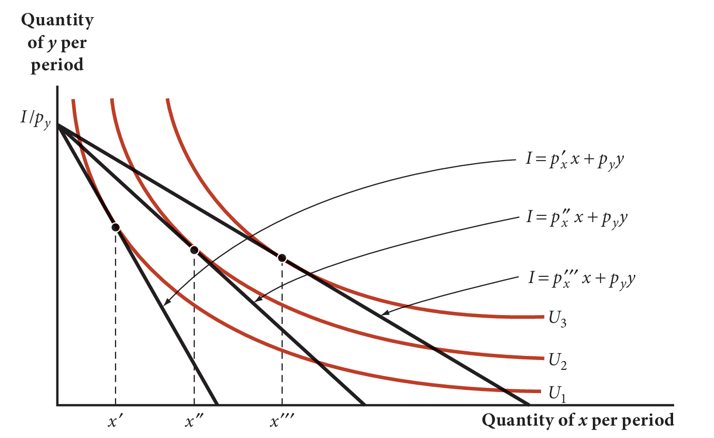
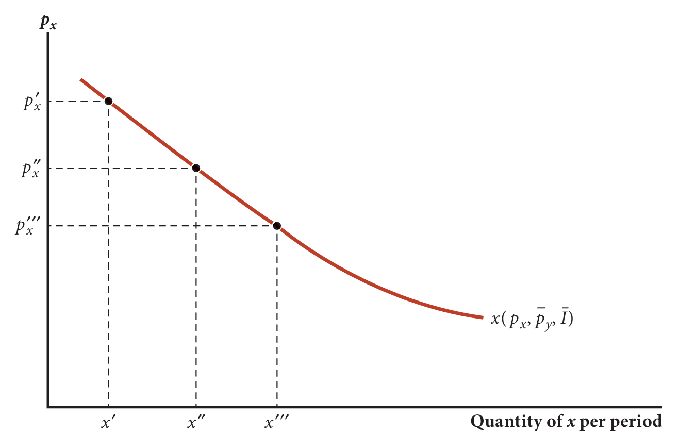
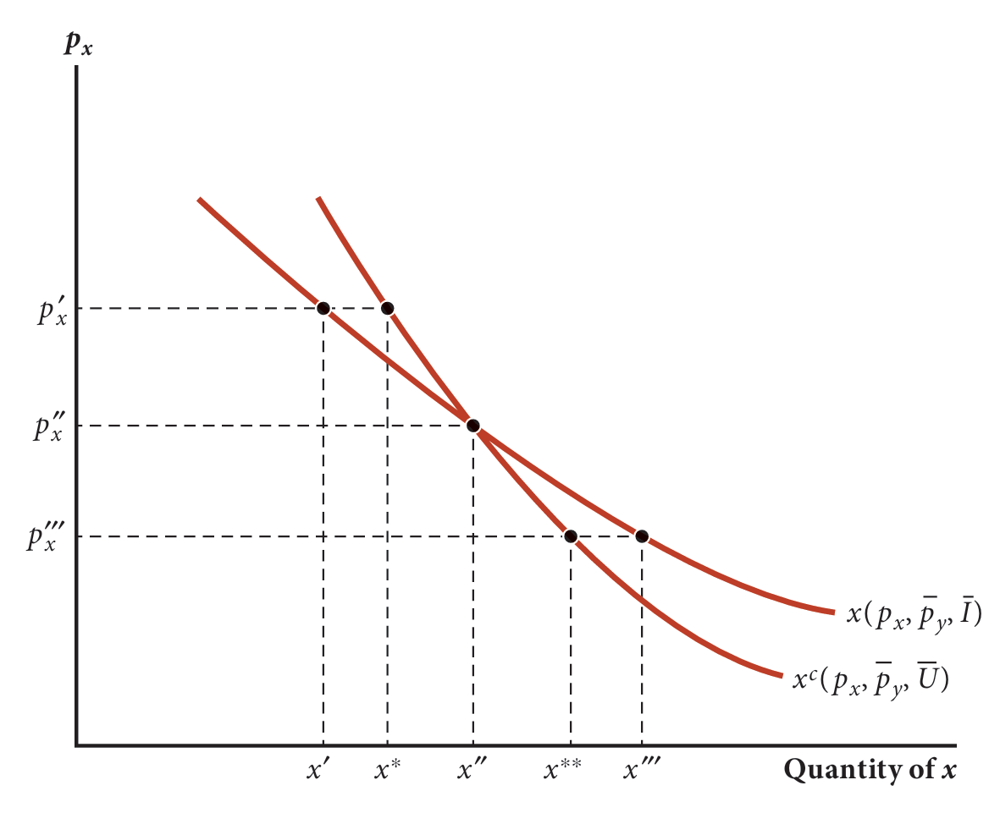
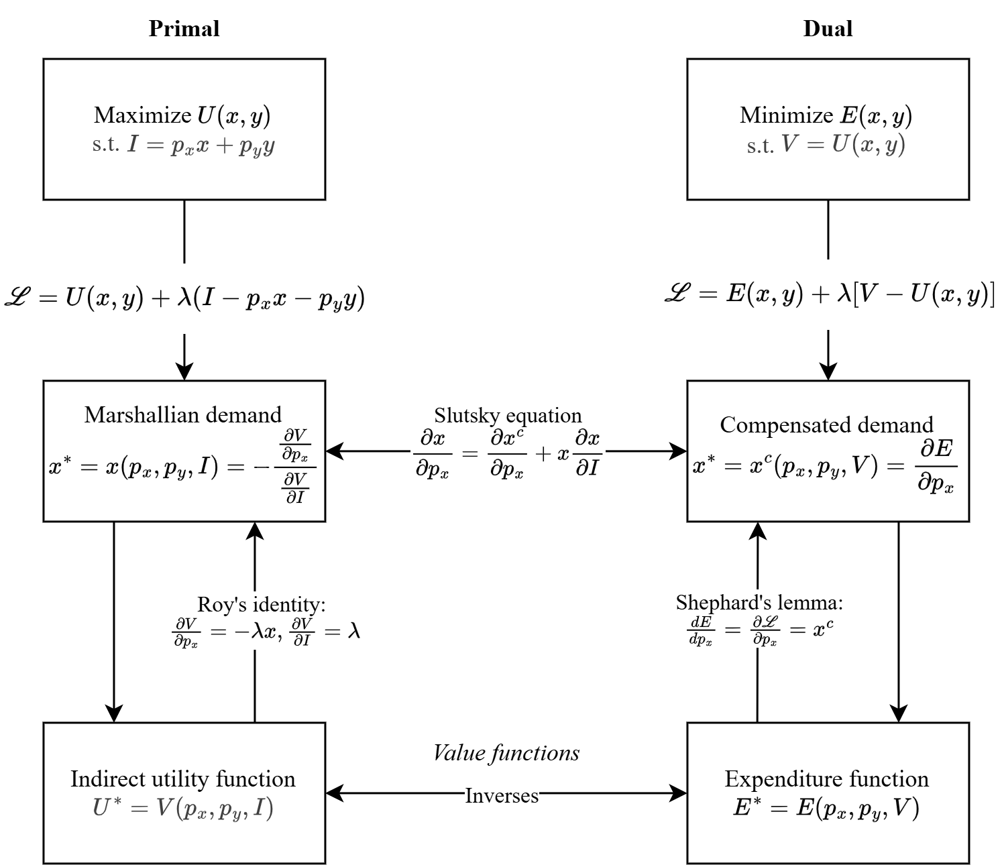

比较静态分析
在预算约束$I=xp_x+yp_y$下，求解效用函数$U(x,y)$取得最大值时$x,y$的值，可以列拉格朗日函数$\mathscr{L}=U(x,y)-\lambda(I-xp_x-yp_y)$，并求解其一阶条件： $$\begin{aligned} \frac{\partial \mathscr{L}}{\partial x} =U_x-\lambda p_x=0 &\Longleftrightarrow U_x=\lambda p_x \\ \frac{\partial \mathscr{L}}{\partial y} =U_y-\lambda p_y=0 &\Longleftrightarrow U_y=\lambda p_y \\ \frac{\partial \mathscr{L}}{\partial \lambda} =I-p_xx-p_yy=0 &\Longleftrightarrow I=p_xx+p_yy \\ \end{aligned} $$ 联立以上方程可以求出$x,y$关于$p_x,p_y,I$的函数，即$x(p_x,p_y,I)$和$y(p_x,p_y,I)$，也就是效用最大化问题的最优解。当价格发生变化后，这组最优解也会发生变化。这里的价格和预算是外生变量，即由模型外部因素决定、不受决策者的选择影响的变量；在效用最大化问题中，决策者能选择的只有商品的数量$x,y$，相应地这些变量被称为内生变量。研究外生变量（比如这里的价格$p_x,p_y$和预算$I$）的变化对内生变量最优解（比如这里的商品数量$x,y$）的影响的分析方法就是比较静态分析。
现以柯布-道格拉斯效用函数为例进行比较静态分析。$$U(x,y)=x^{0.5}y^{0.5}$$ 在预算$I$的约束下，对应的拉格朗日函数为： $$\mathscr{L}=x^{0.5}y^{0.5}+\lambda(I-p_xx-p_yy)$$ 解得变量的最优解： $$x^*=\frac{I}{2p_x}, y^*=\frac{I}{2p_y}$$ 因此，在其他条件不变的情况下，达到最大效用水平时，商品自身价格的上升会导致最优选择的商品数量减少，反之，商品自身价格的下降会导致最优选择的商品数量增加；而预算的增加会导致最优选择的商品数量增加，预算的减少则导致最优选择的商品数量减少。
间接效用函数
将求得的最优解代入到原来的效用函数，就得到了效用关于价格和预算的函数： $$V(p_x,p_y,I)=U^*(x^*,y^*)=(x^*)^{0.5}(y^*)^{0.5}=\frac{I}{2p_x^{0.5}p_y^{0.5}}$$ 这个函数表示的就是价格和预算对最大效用的影响。在这个例子中，最大效用水平与价格的开方成反比，与预算成正比。这原来的效用函数是我们要求最大值的目标，所以称其为目标函数(objective function)，而将最优解代回目标函数后得到的最优目标值关于外生变量的函数被称为价值函数(value function)。
支出函数
效用最大化问题求解的是在固定的支出水平$I$下，可能达到的最高效用水平；相应地，支出最小化问题求解的是在特定的效用水平$V$下，可能使用的最小支出。这两个问题是一组对偶问题。支出函数是价格和效用的函数： $$E(p_1,p_x,\cdots,p_n,V)$$ 支出最小化问题是效用最大化问题的对偶问题，因此可以通过求间接效用函数的反函数来得出支出函数。比如，上面的间接效用函数$V(p_x,p_y,I)=\frac{I}{2p_x^{0.5}p_y^{0.5}}$对应的支出函数为 $$E(p_x,p_y,\bar{U})=2p_x^{0.5}p_y^{0.5}V$$ 注意，这里必须用间接效用函数的反函数，因为只有间接效用函数的变量和支出函数的变量是对应的。
- 支出函数是齐次的，因为当价格和要达到的效用水平同时加倍时，支出也会加倍；
- 支出函数在价格上的偏导数是大于0的，因为价格上升会增加支出；
- 支出函数是价格上的凹函数，即$\frac{\partial^2 E(p_x,p_y,\bar{U})}{\partial p_x^2} < 0$
需求函数
在效用最大化问题中，求得的最优解表达为价格和收入的函数，就是需求函数，也就是上例中的最优解： $$x^*=\frac{I}{2p_x}, y^*=\frac{I}{2p_y}$$ 一般来说，需求函数可以表示为： $$x_n^*=x_n(p_1,p_x,\cdots,p_n,I)$$ 这种需求函数被称为马歇尔需求函数(Marshallian Demand Function)。需求函数是0次齐次的。因为价格和收入同时加倍，需求将不会改变。
从需求函数的形式可以看出，它受商品价格和收入的影响。下面具体分析这些影响（注意以下受到影响的需求量代表的都是效用最大化时的需求量）。
收入对需求的影响
对于正常品（比如手机）来说，收入增加会导致需求的增加，即$\frac{\partial x}{\partial I} > 0$；

对于低级品（比如廉价衣物）来说，收入增加会导致需求的减少，即$\frac{\partial x}{\partial I} < 0$。
价格对需求的影响
价格对需求的影响不像收入的影响那么简单。价格的改变，既改变了商品间的边际替代率，也改变了真实收入（购买力，或者说能够获得的最大效用）。所以价格对需求的影响也包括两部分：
- 替代效应：边际替代率的改变导致的需求的改变
- 收入效应：真实收入的改变导致的需求的改变
显然马歇尔需求曲线的斜率是负的。因为在其他条件不变的情况下，当商品的价格从$p^1_x$上升到$p^2_x$时，一方面边际替代率增加，约束直线和无差异曲线的切点沿曲线上移至点$B$，需求量减少为$x_B$；另一方面，商品自身价格的上升导致真实收入减少，约束直线往左边平移，与代表更低效用水平的无差异曲线$U_1$相切，需求量又进一步减少为$x^{**}$。综合来看，价格的上升导致需求的减少。

如果商品价格从$p'_x$上升到$p''_x$，再上升到$p'''_x$，需求量的变化将如下图所示：
如果上图中的切点足够多，将会组成一条曲线，即马歇尔需求曲线：
当其他条件不变，只有商品自身价格变动时，商品的需求量会沿着需求曲线移动，这被称为需求量的变动；如果除商品自身价格之外的其他条件发生了变化，比如其他商品的价格的改变或者名义收入的改变，就会导致马歇尔需求曲线的整体的变化，形成一条新的曲线，这被称为需求的变动。替代效应
如果只关注真实收入，而不是名义收入，就可以排除收入效应，从而得到单纯的替代效应。真实收入不变就代表获得的效用不变。这种情况下，需求就成了价格和效用的函数： $$x^c=x^c(p_x,\bar{p}_y, \bar{U})$$ 这就是补偿需求函数(Compensated Demand Function)。
补偿需求曲线的斜率也是负的。因为在其他条件不变的情况下，随着商品自身价格的提高，边际替代率增加，切点沿着无差异曲线上移，需求减少。从数学上也可以得出一样的结论：
- 支出函数是凹函数：$\frac{\partial^2 E(p_x,p_y,V)}{\partial p_x^2} < 0$
- 支出函数$E(p_x,p_y,V)$表示的是固定效用水平下的最小支出，因此它在$p_x$上的导数就代表商品自身价格变动对最小支出的影响。而这种影响是通过$x^c$传导的，即$\mathbf{d}p_x\cdot x^c= \mathbf{d}E(p_x,p_y,V)$，所以有$\frac{\mathbf{d}E(p_x,p_y,V)}{\mathbf{d}p_x}=x^c(p_x,p_y,V)$。而且，支出函数$E(p_x,p_y,\bar{U})$是拉格朗日函数$\mathscr{L}=p_xx+p_yy+\lambda[U(x,y)-\bar{U}]$代入最优解$x^*,y^*$后得出的表达式，因此在取得最优解的情况下拉格朗日函数和支出函数是同一函数。所以根据包络定理可得 $$\frac{\mathbf{d}E(p_x,p_y,\bar{U})}{\mathbf{d}p_x}=\frac{\partial \mathscr{L}}{\partial p_x}=x^c(p_x,p_y,V)$$ 这就是谢泼德引理(Shephard's Lemma)。它表示了支出函数在商品自身价格上的偏导数就是补偿需求函数。
上例中支出函数$E(p_x,p_y,V)=2p_x^{0.5}p_y^{0.5}V$，对应的补偿需求函数为： $$\begin{aligned} x^c&=p_x^{-0.5}p_y^{0.5}V \\ y^c&=p_x^{0.5}p_y^{-0.5}V \end{aligned}$$
分解替代效应和收入效应

当补偿需求函数和马歇尔需求函数相等时（比如上图中的$(x''',p''_x)$），在马歇尔需求函数中被固定的收入正好等于在补偿需求函数中被固定的效应水平对应的最小支出： $$x^c(p_x,p_y,V)=x[p_x,p_y,E(p_x,p_y,V)]$$ 对等式两边求导： $$\frac{\partial x^c}{\partial p_x}=\frac{\partial x}{\partial p_x}+\frac{\partial x}{\partial p_y}\frac{\partial p_y}{\partial p_x}+\frac{\partial x}{\partial E}\frac{\partial E}{\partial p_x}=\frac{\partial x}{\partial p_x}+\frac{\partial x}{\partial E}\cdot \frac{\partial E}{\partial p_x}$$ 于是可得： $$\frac{\partial x}{\partial p_x}=\frac{\partial x^c}{\partial p_x}-\frac{\partial x}{\partial E}\cdot \frac{\partial E}{\partial p_x}$$ 上式等号左边的两部分分别代表替代效应和收入效应:- $\frac{\partial x^c}{\partial p_x}$：这一部分正如上面所解释的，代表替代效应。
- $\frac{\partial x}{\partial E}\cdot \frac{\partial E}{\partial p_x}$：这一部分反映的价格变动通过对支出的影响从而导致需求量的变动，这正是收入效应，因为此时支出等于收入。
需求函数间接推导
通过斯拉茨基等式，可以得到求解补偿需求函数斜率的间接方法： $$\frac{\partial x^c}{\partial p_x}=\frac{\partial x}{\partial p_x}+x\frac{\partial x}{\partial I}$$ 在实践中$x^c$往往很难测量，但是$x, p_x, I$则比较好测量，因此上式可以在实践中更好地推测补偿需求函数的斜率。这就是通过对支出函数求导间接推导补偿需求函数的方法。类似地，对间接效用函数求导可以间接推导出马歇尔需求函数。对于间接需求函数$V(p_x,p_y,I)$和拉格朗日函数$\mathscr{L}=U(x,y)+\lambda(I-p_xx-p_yy)$有： $$\begin{aligned} \frac{\partial V}{\partial p_x}&=\frac{\partial\mathscr{L}}{\partial p_x}=-\lambda x \\ \frac{\partial V}{\partial I}&=\frac{\partial\mathscr{L}}{\partial I}=\lambda \end{aligned}$$ 将两式相除得： $$x(p_x,p_y,I)=-\frac{-\lambda x}{\lambda}=-\frac{\partial V/\partial p_x}{\partial V/\partial I}$$ 以上就是罗伊恒等式(Roy's Identity)
总结

效用最大化问题和支出最小化问题是一组对偶问题。两者都可以通过列拉格朗日函数求得最优解。效用最大化问题对应的拉格朗日函数为：$\mathscr{L}=U(x,y)+\lambda(I-p_xx-p_yy)$，求得的最优解是：$x^*=x(p_x,p_y,I)$，即在预算约束下取得最大效用的商品数量；支出最小化问题对应的拉格朗日函数为：$\mathscr{L}=E(x,y)+\lambda[U-U(x,y)]$，求得的最优解是：$x^*=x^c(p_x,p_y,U)$，即达到特定效用水平时花费最小支出的商品数量。两组最优解都是外生变量的函数——效用最大化问题中最优解的外生变量为$p_x,p_y,I$；支出最小化问题中最优解的外生变量为$p_x,p_y,U$。研究这些外生变量对最优解的影响就是比较静态分析。两组最优解都代表商品的数量，也就是需求量。效用最大化问题中求出的需求量是相对于特定预算约束而言的，是个人需求量或马歇尔需求量，记为$x$；支出最小化问题中求出的需求量是相对于特定效用水平而言的，是补偿需求量，记为$x^c$。
除了需求量，对于效用和支出也可以进行比较静态分析。将求得的最优解代入原来的效用函数和支出函数就可以将效用和支出表示为外生变量的函数，即价值函数。在效用最大化问题中，效用函数可以表示为$U^*=V(p_x,p_y,I)$，其含义为在预算约束下取得的最大效用水平，该函数被称为间接效用函数；在支出最小化问题中，支出函数可以表示为$E^*=E(p_x,p_y,U)$，其含义为在特定效用水平下可能使用的最小支出。间接效用函数与支出函数互为反函数，间接效用函数中的预算$I$代表的就是支出函数中的支出$E$，支出函数中的效用$U$代表的就是间接效用函数中的效用$V$。当$I=E$时，就有$U=V$；反之，当$U=V$时，就有$E=I$。因为在效用最大化问题中，求得的$V$代表在预算约束$I$下取得的最大效用水平，其中的$I$也就相当于在效用$V$下能够使用的最小支出；在支出最小化问题中，求得的$E$代表在效用水平$U$下能够使用的最小支出，其中的$U$也就相当于在预算$E$下能够取得的最大效用水平。这也就是对偶问题含义的体现。而当$I-E,U=V$时，就会有$x=x^c$，即$x(p_x,p_y,I)=x^c(p_x,p_y,V)$，也就是$x[p_x,p_y,E(p_x,p_y,V)]=x^c(p_x,p_y,V)$，两边同时求$p_x$上的导数可得：$\frac{\partial x}{\partial p_x}=\frac{\partial x}{\partial p_x}+\frac{\partial x}{\partial E}\frac{\partial E}{\partial p_x}=\frac{\partial x^c}{\partial p_x}$，因此就有$\frac{\partial x}{\partial p_x}=\frac{\partial x^c}{\partial p_x}-\frac{\partial x}{\partial E}\frac{\partial E}{\partial p_x}=\frac{\partial x^c}{\partial p_x}-x^c\frac{\partial x}{\partial E}=\frac{\partial x}{\partial p_x}\big\vert_{U=V}-x\frac{\partial x}{\partial E}$。这就是斯拉茨基等式，它建立了补偿需求函数和马歇尔需求函数之间的联系，并将马歇尔需求函数分成了替代效应$\frac{\partial x}{\partial p_x}\big\vert_{U=V}$和收入效应$-x\frac{\partial x}{\partial E}$两部分，使得对这两种效应的定量研究成为可能。
因为支出函数$E(p_x,p_y,V)$为特定效用水平$V$下能够使用的最小支出，所以它又是补偿需求量的函数，即$E=p_xx^c+p_yy^c$，所以$\frac{\partial E}{\partial p_x}=x^c$。这就是谢泼德引理，即对于支出最小问题$\mathscr{L}=p_xx+p_yy+\lambda[V-U(x,y)]$有$\frac{\partial E}{\partial p_x}=\frac{\mathscr{L}}{\partial p_x}=x^c$。另外，在效用最大化问题$\mathscr{L}=U(x,y)+\lambda(I-p_xx-p_yy)$中，$\frac{\partial\mathscr{L}}{\partial p_x}=-\lambda x=\frac{\partial V}{\partial p_x}$，且$\frac{\partial\mathscr{L}}{\partial I}=-\lambda=\frac{\partial V}{\partial I}$，所以$\frac{\frac{\partial V}{\partial p_x}}{\frac{\partial V}{\partial I}}=\frac{-\lambda x}{-\lambda}=x$，这就是罗伊恒等式。谢泼德引理建立了支出函数和补偿需求函数的联系；罗伊恒等式建立了间接效用函数和马歇尔需求函数的联系。支出函数和间接效用函数本身是由补偿需求函数和马歇尔需求函数代入原式得来的，现在通过求偏导的方式又能够还原到补偿需求函数和马歇尔需求函数。